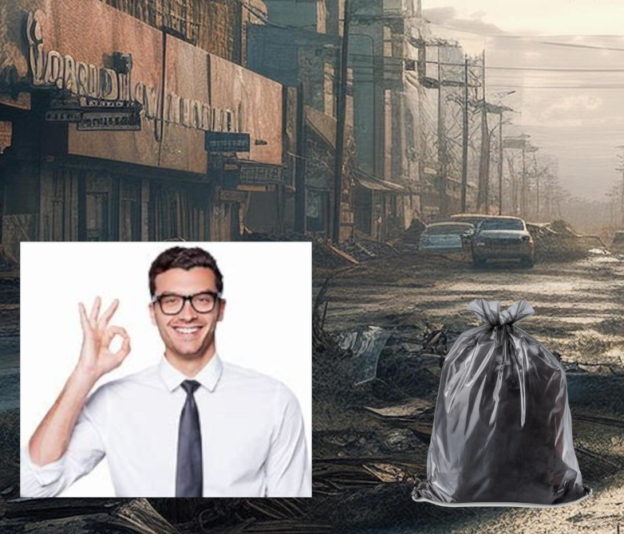
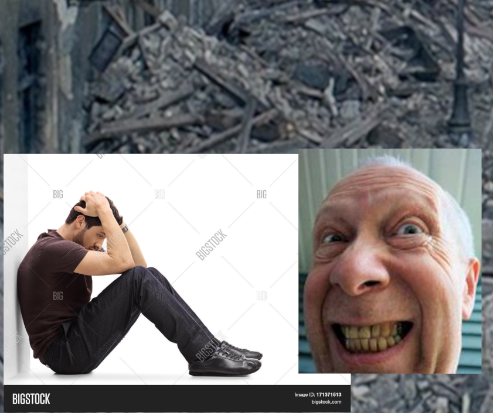
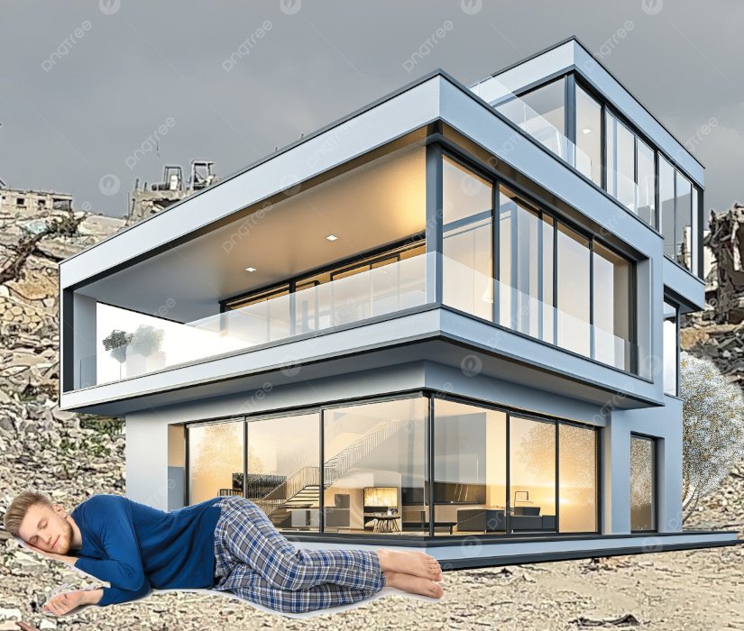
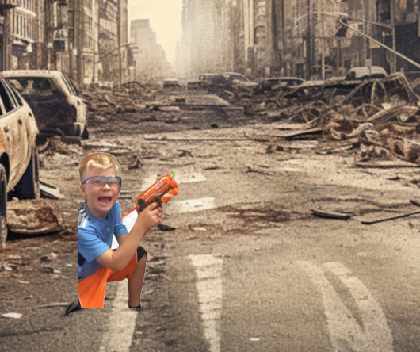
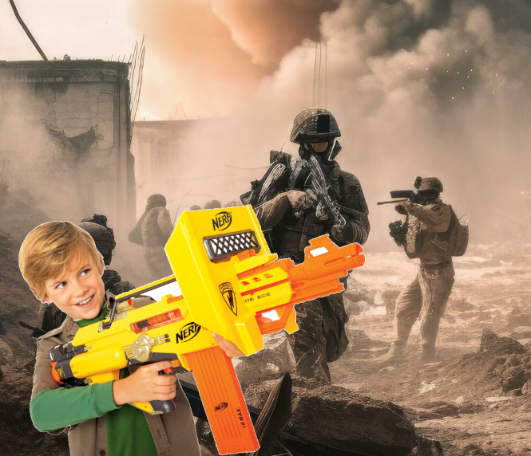

How to survive the apocalypse
1. find food. Don't be afraid of trying new things, because food is crucial to surviving.

2. keep away from creepy people.

3. Make a makeshift home. nothing to fancy though.

4. Get geared up to be ready for battle.

5. When in a war, make sure to keep a gun by your side.
